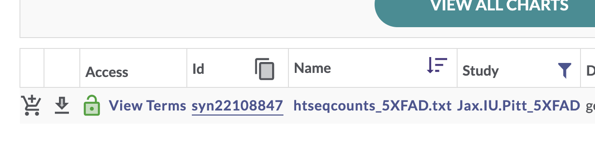
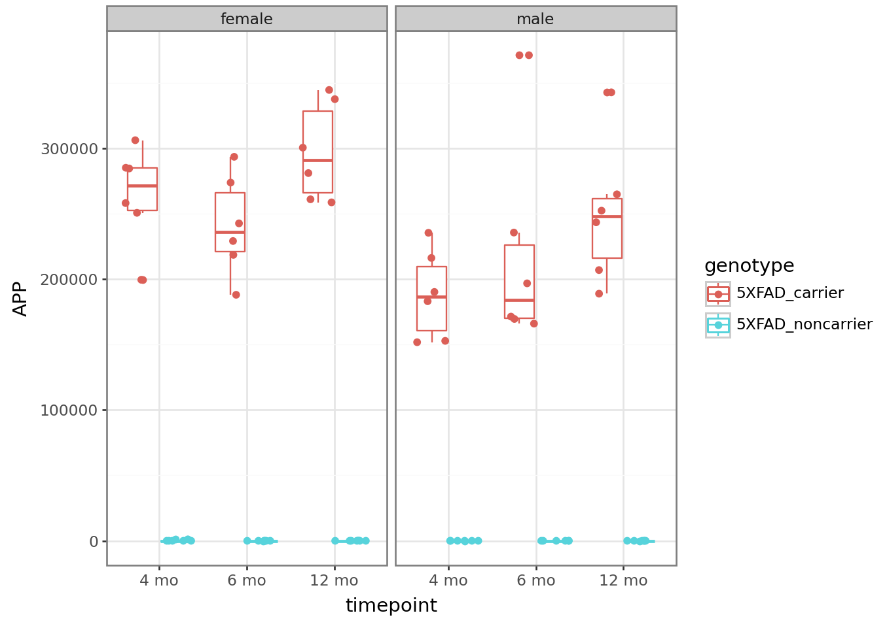
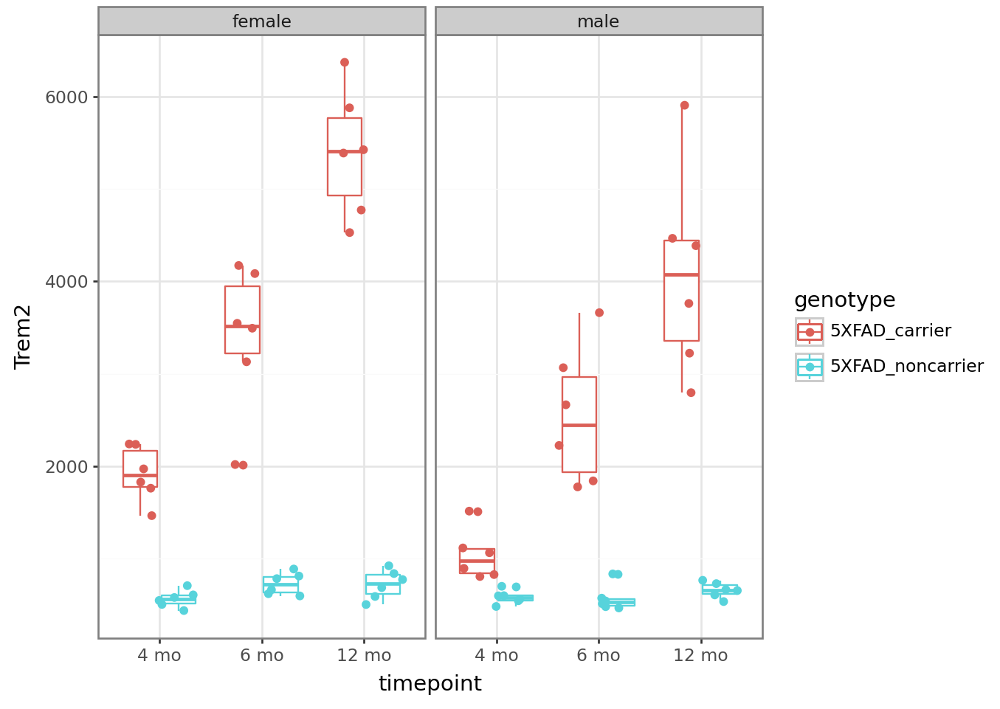
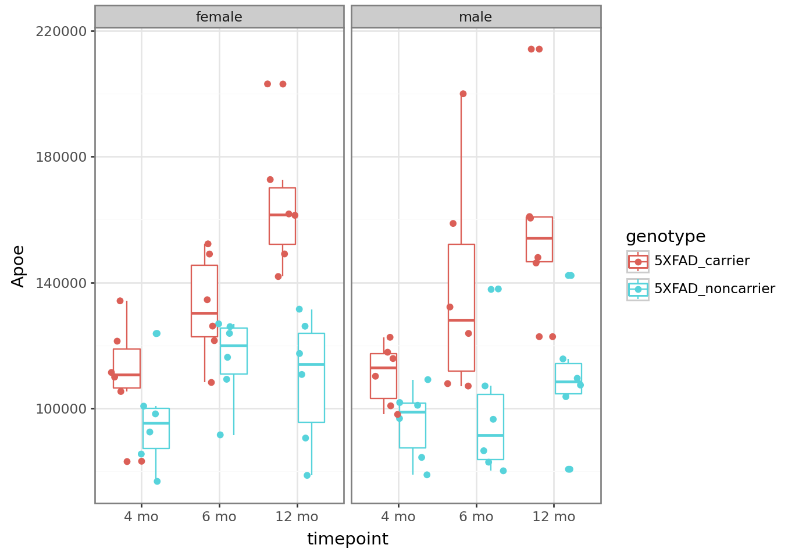

import synapseclient
import pandas as pd
from datetime import datetime
syn = synapseclient.Synapse()AD Knowledge Portal Workshop: Download and explore 5XFAD mouse data in Python
Overview
We will be working with metadata and RNAseq counts data from The Jax.IU.Pitt_5XFAD Study (Jax.IU.Pitt_5XFAD), which can be found here on the AD Knowledge Portal. During this workshop we will use Python to:
Log in to Synapse
Download the counts file (single-file download from Synapse)
Download the metadata files (bulk data download from Synapse)
Map samples in data files to information in metadata files
Explore the data
Setup
Install synapseclient package
If you haven’t already, install synapseclient (the Synapse python client package) using pip from the command line.
pip3 install --upgrade synapseclientWe will also use the python package pandas for data wrangling. If you don’t have it installed, install from the command line:
pip3 install pandasImport the synapseclient and pandas libraries and create a Synapse object.
Login to Synapse
Next, you will need to log in to your Synapse account.
Follow these instructions to generate a personal access token, then paste the PAT into the code below. Make sure you scope your access token to allow you to View, Download, and Modify.
⚠ DO NOT put your Synapse access token in scripts that will be shared with others, or they will be able to log in as you.
syn.login(authToken = "<paste your personal access token here>")For more information on managing Synapse credentials with synapseclient, see the documentation here. If you have a .synapseConfig file stored in your home directory, you can simply run
syn.login()Download data
While you can always download data from the AD Portal website via your web browser, it’s usually faster and often more convenient to download data programmatically.
Download a single file
To download a single file from the AD Knowledge Portal, you can click the linked file name to go to a page in the Synapse platform where that file is stored. Using the synID on that page, you can call the syn.get() function to download the file.
Exercise 1: Use Explore Data to find processed RNAseq data from the Jax.IU.Pitt_5XFAD Study
This filters the table to a single file. In the “Id” column for this htseqcounts_5XFAD.txt file, there is a unique Synapse ID (synID).

We can then use that synID to download the file. Some information about the file and its storage location within Synapse is assigned to the variable counts_file.
counts_id ="syn22108847"
counts_file = syn.get(counts_id, downloadLocation = "files/", ifcollision = "overwrite.local")The argument ifcollision = "overwrite.local" means that instead of downloading the file and saving it as a new copy, it will overwrite the current file at that location if it already exists, to avoid cluttering your hard drive with multiple copies of the same file. Before downloading, synGet will check if the file on your hard drive is the same as the version on Synapse, and will only download from Synapse if the two files are different.
This is very useful for large files especially: you can ensure that you always have the latest copy of a file from Synapse, without having to re-download the file if you already have the current version on your hard drive.
The variable counts_file is a Synapse entity object. It has a variety of attributes, including .path, .properties, and .annotations that contain information about where the file is in Synapse, how it is labeled, what version it is, etc.
Synapse ID of the file:
counts_file.id'syn22108847'The local path where the file was download:
counts_file.path '/Users/jbeck/Code/ADPortalWorkshops/files/htseqcounts_5XFAD.txt'The file version:
counts_file.properties.versionNumber2Let’s take a quick look at the file we just downloaded.
counts = pd.read_table(counts_file.path, sep = "\t")
counts.head()| gene_id | 32043rh | 32044rh | 32046rh | 32047rh | 32048rh | 32049rh | 32050rh | 32052rh | 32053rh | ... | 46887rh | 46888rh | 46889rh | 46890rh | 46891rh | 46892rh | 46893rh | 46895rh | 46896rh | 46897rh | |
|---|---|---|---|---|---|---|---|---|---|---|---|---|---|---|---|---|---|---|---|---|---|
| 0 | ENSG00000080815 | 22554 | 0 | 0 | 0 | 16700 | 0 | 0 | 19748 | 14023 | ... | 16072 | 0 | 16680 | 13367 | 0 | 25119 | 92 | 0 | 15934 | 0 |
| 1 | ENSG00000142192 | 344489 | 4 | 0 | 1 | 260935 | 6 | 8 | 337456 | 206851 | ... | 258061 | 0 | 235530 | 196721 | 0 | 371037 | 1116 | 0 | 235343 | 6 |
| 2 | ENSMUSG00000000001 | 5061 | 3483 | 3941 | 3088 | 2756 | 3067 | 2711 | 3334 | 3841 | ... | 3719 | 3899 | 4173 | 4008 | 3037 | 5967 | 3459 | 4262 | 3923 | 3486 |
| 3 | ENSMUSG00000000003 | 0 | 0 | 0 | 0 | 0 | 0 | 0 | 0 | 0 | ... | 0 | 0 | 0 | 0 | 0 | 0 | 0 | 0 | 0 | 0 |
| 4 | ENSMUSG00000000028 | 208 | 162 | 138 | 127 | 95 | 154 | 165 | 124 | 103 | ... | 128 | 210 | 127 | 156 | 116 | 260 | 161 | 189 | 179 | 117 |
5 rows × 73 columns
Bulk download files
Exercise 2: Use Explore Studies to find all metadata files from the Jax.IU.Pitt_5XFAD study
Use the facets and search bar to look for data you want to download from the AD Knowledge Portal. Once you’ve identified the files you want, click on the download arrow icon on the top right of the Explore Data table and select “Programmatic Options” from the drop-down menu.

In the window that pops up, select the “Python” tab from the top menu bar. This will display some Python code that constructs a SQL query of the Synapse data table that drives the AD Knowledge Portal. This query will allow us to download only the files that meet our search criteria.
We’ll download our files using two steps:
We will use the
syn.tableQuery()code the portal gave us to download a CSV file that lists all of the files we want. This CSV file is a table, one row per file in the list, containing the Synapse ID, file name, annotations, etc associated with each file.- This does NOT download the files themselves. It only fetches a list of the files plus their annotations for you.
We will call
syn.get()on each Synapse ID in the table to download the files.
Why isn’t this just one step instead of two?
Splitting this into steps can be extremely helpful for cases where you might not want to download all of the files back-to-back. For example, if the file sizes are very large or if you are downloading hundreds of files. Downloading the table first lets you: a) Fetch helpful annotations about the files without downloading them first, and b) do things like loop through the list one by one, download a file, do some processing, and delete the file before downloading the next one to save hard drive space.
Back to downloading…
The function syn.tableQuery() returns a Synapse object wrapper around the CSV file, which is automatically downloaded to a folder called .synapseCache in your home directory. You can use query.filepath to see the path to the file in the Synapse cache.
# download the results of the filtered table query
query = syn.tableQuery(
"SELECT * FROM syn11346063 WHERE ( ( `study` HAS ( 'Jax.IU.Pitt_5XFAD' ) ) " +
"AND ( `resourceType` = 'metadata' ) )",
includeRowIdAndRowVersion = False
)
# view the file path of the resulting csv
query.filepathDownloading files: 0%| | 0.00/1.00 [00:00<?, ?B/s, syn11346063]Downloading files: 0%| | 0.00/2.14k [00:00<?, ?B/s, syn11346063]Downloading files: 100%|██████████| 2.14k/2.14k [00:00<00:00, 4.11kB/s, syn11346063]Downloaded syn11346063 to /Users/jbeck/.synapseCache/948/149674948/SYNAPSE_TABLE_QUERY_149674948.csvDownloading files: 100%|██████████| 2.14k/2.14k [00:00<00:00, 4.09kB/s, syn11346063]'/Users/jbeck/.synapseCache/948/149674948/SYNAPSE_TABLE_QUERY_149674948.csv'We’ll use the pandas function read.csv to read the CSV file as a data frame. We can explore the download_table object and see that it contains information on all of the AD Portal data files we want to download. Some columns like the “id” and “parentId” columns contain info about where the file is in Synapse, and some columns contain AD Portal annotations for each file, like “dataType”, “specimenID”, and “assay”. This annotation table will later allow us to link downloaded files to additional metadata variables!
# read in the table query csv file
download_table = pd.read_csv(query.filepath)
download_table| id | name | study | dataType | assay | organ | tissue | species | sex | consortium | ... | benefactorId | projectId | modifiedOn | modifiedBy | dataFileHandleId | metaboliteType | chromosome | modelSystemType | libraryPrep | dataFileSizeBytes | |
|---|---|---|---|---|---|---|---|---|---|---|---|---|---|---|---|---|---|---|---|---|---|
| 0 | syn22094731 | Jax.IU.Pitt_5XFAD_assay_autorad_metadata.csv | ["Jax.IU.Pitt_5XFAD"] | ["image"] | ["autoradiography"] | NaN | NaN | NaN | NaN | MODEL-AD | ... | syn2580853 | syn2580853 | 1684528999504 | 3427512 | 75355920 | NaN | NaN | animal | NaN | 22454 |
| 1 | syn22094732 | Jax.IU.Pitt_5XFAD_assay_PET_metadata.csv | ["Jax.IU.Pitt_5XFAD"] | ["image"] | ["Positron Emission Tomography"] | NaN | NaN | NaN | NaN | MODEL-AD | ... | syn2580853 | syn2580853 | 1684528999561 | 3427512 | 75355925 | NaN | NaN | animal | NaN | 20460 |
| 2 | syn22103212 | Jax.IU.Pitt_5XFAD_individual_metadata.csv | ["Jax.IU.Pitt_5XFAD"] | NaN | NaN | NaN | NaN | NaN | NaN | NaN | ... | syn2580853 | syn2580853 | 1712682733219 | 3427512 | 136215768 | NaN | NaN | NaN | NaN | 159129 |
| 3 | syn22103213 | Jax.IU.Pitt_5XFAD_biospecimen_metadata.csv | ["Jax.IU.Pitt_5XFAD"] | NaN | NaN | NaN | NaN | NaN | NaN | MODEL-AD | ... | syn2580853 | syn2580853 | 1684528999849 | 3427512 | 75356382 | NaN | NaN | animal | NaN | 36929 |
| 4 | syn22110328 | Jax.IU.Pitt_5XFAD_assay_RNAseq_metadata.csv | ["Jax.IU.Pitt_5XFAD"] | ["geneExpression"] | ["rnaSeq"] | NaN | NaN | NaN | NaN | MODEL-AD | ... | syn2580853 | syn2580853 | 1684529010418 | 3427512 | 75357585 | NaN | NaN | animal | NaN | 5476 |
5 rows × 43 columns
Let’s look at a subset of columns that might be useful:
# read in the table query csv file
download_table[["id", "name", "metadataType", "assay", "fileFormat", "currentVersion"]]| id | name | metadataType | assay | fileFormat | currentVersion | |
|---|---|---|---|---|---|---|
| 0 | syn22094731 | Jax.IU.Pitt_5XFAD_assay_autorad_metadata.csv | assay | ["autoradiography"] | csv | 2 |
| 1 | syn22094732 | Jax.IU.Pitt_5XFAD_assay_PET_metadata.csv | assay | ["Positron Emission Tomography"] | csv | 2 |
| 2 | syn22103212 | Jax.IU.Pitt_5XFAD_individual_metadata.csv | individual | NaN | NaN | 5 |
| 3 | syn22103213 | Jax.IU.Pitt_5XFAD_biospecimen_metadata.csv | biospecimen | NaN | csv | 3 |
| 4 | syn22110328 | Jax.IU.Pitt_5XFAD_assay_RNAseq_metadata.csv | assay | ["rnaSeq"] | csv | 4 |
Tip: Copy this file and save it somewhere memorable to have a complete record of all the files you are using and what version of each file was downloaded – for reproducibility!
Finally, we can use a for loop to loop through the “id” column and apply the syn.get() function to each file’s synID.
# loop through the column of synIDs and download each file
for id in download_table.id:
syn.get(id, downloadLocation = "files/", ifcollision = "overwrite.local")Congratulations, you have bulk downloaded files from the AD Knowledge Portal!
✏ Note on file versions
All files in the AD Portal are versioned, meaning that if the file represented by a particular synID changes, a new version will be created. You can access a specific versions by using the version argument in syn.get(). More info on version control in the AD Portal and the Synapse platform can be found here.
Single-specimen files
For files that contain data from a single specimen (e.g. raw sequencing files, raw mass spectra, etc.), we can use the Synapse annotations to associate these files with the appropriate metadata.
Excercise 3: Use Explore Data to find all RNAseq files from the Jax.IU.Pitt_5XFAD study.
If we filter for data where Study = “Jax.IU.Pitt_5XFAD” and Assay = “rnaSeq” we will get a list of 148 files, including raw fastqs and processed counts data.
Synapse entity annotations
We can use the function syn.get_annotations() to view the annotations associated with any file before actually downloading the file.
# the synID of a random fastq file from our filtered search of fastq files
random_fastq = "syn22108503"
# extract the annotations as a dict
fastq_annotations = syn.get_annotations(random_fastq)
fastq_annotations{'sex': ['female'],
'room': ['JAX_MGL373'],
'assay': ['rnaSeq'],
'grant': ['U54AG054345'],
'organ': ['brain'],
'study': ['Jax.IU.Pitt_5XFAD'],
'tissue': ['right cerebral hemisphere'],
'bedding': ['aspen'],
'birthID': ['RMO1223'],
'climbID': ['298456'],
'species': ['Mouse'],
'waterpH': [2.85],
'ageDeath': [10.8196721311475],
'dataType': ['geneExpression'],
'genotype': ['5XFAD_carrier'],
'matingID': ['M-108-17'],
'dateBirth': ['1521417600000'],
'consortium': ['MODEL-AD'],
'fileFormat': ['fastq'],
'generation': ['N1F3'],
'rodentDiet': ['0.06'],
'specimenID': ['32043rh'],
'brainWeight': [0.503],
'dataSubtype': ['raw'],
'microchipID': ['288646853'],
'stockNumber': ['8730'],
'individualID': ['32043'],
'officialName': ['B6.Cg-Tg(APPSwFlLon,PSEN1*M146L*L286V)6799Vas/Mmjax'],
'resourceType': ['experimentalData'],
'rodentWeight': [28.76],
'ageDeathUnits': ['months'],
'isModelSystem': [False],
'materialOrigin': ['JAX'],
'isMultiSpecimen': [False],
'modelSystemName': ['5XFAD'],
'modelSystemType': ['animal'],
'nucleicAcidSource': ['bulk cell'],
'genotypeBackground': ['C57BL6J'],
'individualIdSource': ['JAX'],
'individualCommonGenotype': ['5XFAD']}The file annotations let us see which study the file is associated with (Jax.IU.Pitt.5XFAD), which species it’s from (Mouse), which assay generated the file (rnaSeq), and a whole bunch of other properties. Most importantly, single-specimen files are annotated with with the specimenID of the specimen in the file, and the individualID of the individual that specimen was taken from. We can use these annotations to link files to the rest of the metadata, including metadata that is not in annotations. This is especially helpful for human studies, as potentially identifying information like age, race, and diagnosis is not included in file annotations.
ind_meta = pd.read_csv("files/Jax.IU.Pitt_5XFAD_individual_metadata.csv")
# Find records belonging to the individual this file maps to in our joined
# metadata. The annotation value is a string but the individualID column in the
# metadata is type int so we have to convert.
ind_meta[(ind_meta['individualID'] == int(fastq_annotations['individualID'][0]))]| individualID | individualIdSource | species | sex | genotype | genotypeBackground | room | litter | matingID | dateBirth | ... | PhysicalMarker | generation | AnimalMatingStatus | jobNumber | microchipID | rodentDiet | birthID | brainWeight | rodentWeight | modelCommonName | |
|---|---|---|---|---|---|---|---|---|---|---|---|---|---|---|---|---|---|---|---|---|---|
| 511 | 32043 | JAX | Mouse | female | 5XFAD_carrier | C57BL6J | JAX_MGL373 | RMO1223 | M-108-17 | 3/19/18 | ... | NaN | N1F3 | Virgin | JAX 5xFAD 12mo | 288646853.0 | 6% | NaN | 0.503 | 28.76 | 5XFAD |
1 rows × 29 columns
Annotations during bulk download
When bulk downloading many files, the best practice is to preserve the download manifest that is generated which lists all the files, their synIDs, and all their annotations. If using the Synapse R client, follow the instructions in the Bulk download files section above.
If we use the “Programmatic Options” tab in the AD Portal download menu to download all 148 rnaSeq files from the 5XFAD study, we would get a table query that looks like this:
query = syn.tableQuery(
"SELECT * FROM syn11346063 WHERE ( ( \"study\" HAS ( 'Jax.IU.Pitt_5XFAD' ) ) " +
"AND ( \"assay\" HAS ( 'rnaSeq' ) ) )",
includeRowIdAndRowVersion = False
)Downloading files: 0%| | 0.00/1.00 [00:00<?, ?B/s, syn11346063]Downloaded syn11346063 to /Users/jbeck/.synapseCache/950/149674950/SYNAPSE_TABLE_QUERY_149674950.csvDownloading files: 100%|██████████| 69.7k/69.7k [00:00<00:00, 146kB/s, syn11346063]As we saw previously, this downloads a csv file with the results of our AD Portal query. Opening that file lets us see which specimens are associated with which files:
annotations_table = pd.read_csv(query.filepath)
annotations_table| id | name | study | dataType | assay | organ | tissue | species | sex | consortium | ... | benefactorId | projectId | modifiedOn | modifiedBy | dataFileHandleId | metaboliteType | chromosome | modelSystemType | libraryPrep | dataFileSizeBytes | |
|---|---|---|---|---|---|---|---|---|---|---|---|---|---|---|---|---|---|---|---|---|---|
| 0 | syn22108503 | 32043_GT19_12829_CCGCGGTT-AGCGCTAG_R1_001.fast... | ["Jax.IU.Pitt_5XFAD"] | ["geneExpression"] | ["rnaSeq"] | brain | ["right cerebral hemisphere"] | ["Mouse"] | ["female"] | MODEL-AD | ... | syn2580853 | syn2580853 | 1684529000205 | 3427512 | 75357319 | NaN | NaN | animal | NaN | 4234330492 |
| 1 | syn22108508 | 32044_GT19_12856_GGAGCGTC-GTCCGTGC_R1_001.fast... | ["Jax.IU.Pitt_5XFAD"] | ["geneExpression"] | ["rnaSeq"] | brain | ["right cerebral hemisphere"] | ["Mouse"] | ["male"] | MODEL-AD | ... | syn2580853 | syn2580853 | 1684529000273 | 3427512 | 75357320 | NaN | NaN | animal | NaN | 3157791076 |
| 2 | syn22108512 | 32046_GT19_12865_CAACAATG-CTTCACGG_R1_001.fast... | ["Jax.IU.Pitt_5XFAD"] | ["geneExpression"] | ["rnaSeq"] | brain | ["right cerebral hemisphere"] | ["Mouse"] | ["male"] | MODEL-AD | ... | syn2580853 | syn2580853 | 1684529000345 | 3427512 | 75357321 | NaN | NaN | animal | NaN | 3194898678 |
| 3 | syn22108519 | 32047_GT19_12836_ATGAGGCC-GTTAATTG_R1_001.fast... | ["Jax.IU.Pitt_5XFAD"] | ["geneExpression"] | ["rnaSeq"] | brain | ["right cerebral hemisphere"] | ["Mouse"] | ["male"] | MODEL-AD | ... | syn2580853 | syn2580853 | 1684529000413 | 3427512 | 75357323 | NaN | NaN | animal | NaN | 2542370766 |
| 4 | syn22108525 | 32049_GT19_12881_GCCACAGG-CATGCCAT_R1_001.fast... | ["Jax.IU.Pitt_5XFAD"] | ["geneExpression"] | ["rnaSeq"] | brain | ["right cerebral hemisphere"] | ["Mouse"] | ["female"] | MODEL-AD | ... | syn2580853 | syn2580853 | 1684529000486 | 3427512 | 75357322 | NaN | NaN | animal | NaN | 2931163068 |
| ... | ... | ... | ... | ... | ... | ... | ... | ... | ... | ... | ... | ... | ... | ... | ... | ... | ... | ... | ... | ... | ... |
| 143 | syn22108846 | 46896_GT19_12890_CATAGAGT-TGCCACCA_R2_001.fast... | ["Jax.IU.Pitt_5XFAD"] | ["geneExpression"] | ["rnaSeq"] | brain | ["right cerebral hemisphere"] | ["Mouse"] | ["male"] | MODEL-AD | ... | syn2580853 | syn2580853 | 1684529010148 | 3427512 | 75357566 | NaN | NaN | animal | NaN | 3566851836 |
| 144 | syn22108847 | htseqcounts_5XFAD.txt | ["Jax.IU.Pitt_5XFAD"] | ["geneExpression"] | ["rnaSeq"] | brain | ["right cerebral hemisphere"] | NaN | NaN | MODEL-AD | ... | syn2580853 | syn2580853 | 1684529010219 | 3427512 | 75357567 | NaN | NaN | animal | NaN | 12803625 |
| 145 | syn22108848 | tpm_gene_5XFAD.txt | ["Jax.IU.Pitt_5XFAD"] | ["geneExpression"] | ["rnaSeq"] | brain | ["right cerebral hemisphere"] | NaN | NaN | MODEL-AD | ... | syn2580853 | syn2580853 | 1684529010285 | 3427512 | 75357570 | NaN | NaN | animal | NaN | 15483508 |
| 146 | syn22108849 | tpm_isoform_5XFAD.txt | ["Jax.IU.Pitt_5XFAD"] | ["geneExpression"] | ["rnaSeq"] | brain | ["right cerebral hemisphere"] | NaN | NaN | MODEL-AD | ... | syn2580853 | syn2580853 | 1684529010351 | 3427512 | 75357576 | NaN | NaN | animal | NaN | 42994443 |
| 147 | syn22110328 | Jax.IU.Pitt_5XFAD_assay_RNAseq_metadata.csv | ["Jax.IU.Pitt_5XFAD"] | ["geneExpression"] | ["rnaSeq"] | NaN | NaN | NaN | NaN | MODEL-AD | ... | syn2580853 | syn2580853 | 1684529010418 | 3427512 | 75357585 | NaN | NaN | animal | NaN | 5476 |
148 rows × 43 columns
You could then use a for loop as we did in the Bulk download files example to loop through the column of synIDs and download all 148 files.
Multispecimen files
Multispecimen files in the AD Knowledge Portal are files that contain data or information from more than one specimen. They are not annotated with individualIDs or specimenIDs, since these files may contain numbers of specimens that exceed the annotation limits. These files are usually processed or summary data (gene counts, peptide quantifications, etc), and are always annotated with isMultiSpecimen = TRUE.
If we look at the processed data files in the table of 5XFAD RNAseq file annotations we just downloaded, we will see that isMultiSpecimen = TRUE, but individualID and specimenID are blank:
annotations_table.loc[
annotations_table['fileFormat'] == "txt",
['name','individualID', 'specimenID', 'isMultiSpecimen']
]| name | individualID | specimenID | isMultiSpecimen | |
|---|---|---|---|---|
| 144 | htseqcounts_5XFAD.txt | NaN | NaN | True |
| 145 | tpm_gene_5XFAD.txt | NaN | NaN | True |
| 146 | tpm_isoform_5XFAD.txt | NaN | NaN | True |
The multispecimen file should contain a row or column of specimenIDs that correspond to the specimenIDs used in a study’s metadata, as we have seen with the 5XFAD counts file.
counts.columnsIndex(['gene_id', '32043rh', '32044rh', '32046rh', '32047rh', '32048rh',
'32049rh', '32050rh', '32052rh', '32053rh', '32057rh', '32059rh',
'32061rh', '32062rh', '32065rh', '32067rh', '32068rh', '32070rh',
'32073rh', '32074rh', '32075rh', '32078rh', '32081rh', '32088rh',
'32640rh', '46105rh', '46106rh', '46107rh', '46108rh', '46109rh',
'46110rh', '46111rh', '46112rh', '46113rh', '46115rh', '46121rh',
'46131rh', '46132rh', '46134rh', '46138rh', '46141rh', '46142rh',
'46862rh', '46863rh', '46865rh', '46866rh', '46867rh', '46868rh',
'46871rh', '46872rh', '46873rh', '46874rh', '46875rh', '46876rh',
'46877rh', '46878rh', '46879rh', '46881rh', '46882rh', '46883rh',
'46884rh', '46885rh', '46886rh', '46887rh', '46888rh', '46889rh',
'46890rh', '46891rh', '46892rh', '46893rh', '46895rh', '46896rh',
'46897rh'],
dtype='object')Working with AD Portal metadata
Metadata basics
We have now downloaded several metadata files and an RNAseq counts file from the portal. For our next exercises, we want to read those files in as R data so we can work with them.
We can see from the download_table we got during the bulk download step that we have five metadata files. Two of these should be the individual and biospecimen files, and three of them are assay metadata files.
download_table[['name', 'metadataType', 'assay']]| name | metadataType | assay | |
|---|---|---|---|
| 0 | Jax.IU.Pitt_5XFAD_assay_autorad_metadata.csv | assay | ["autoradiography"] |
| 1 | Jax.IU.Pitt_5XFAD_assay_PET_metadata.csv | assay | ["Positron Emission Tomography"] |
| 2 | Jax.IU.Pitt_5XFAD_individual_metadata.csv | individual | NaN |
| 3 | Jax.IU.Pitt_5XFAD_biospecimen_metadata.csv | biospecimen | NaN |
| 4 | Jax.IU.Pitt_5XFAD_assay_RNAseq_metadata.csv | assay | ["rnaSeq"] |
We are only interested in RNAseq data, so we will only read in the individual, biospecimen, and RNAseq assay metadata files.
# individual metadata
ind_meta = pd.read_csv("files/Jax.IU.Pitt_5XFAD_individual_metadata.csv")
# biospecimen metadata
bio_meta = pd.read_csv("files/Jax.IU.Pitt_5XFAD_biospecimen_metadata.csv")
# assay metadata
rna_meta = pd.read_csv("files/Jax.IU.Pitt_5XFAD_assay_RNAseq_metadata.csv")✏ Note on best practices
We’ve been using the ifcollision = "overwrite.local" argument to syn.get() to avoid making multiple copies of each file, so hard-coding the file names in the code block above works as expected. However, if you forget this argument or the file gets renamed on Synapse, you could be reading in an old file instead of the one you just downloaded!
syn.get() returns an object that contains the file path of the downloaded file, and it’s good practice to use this instead to avoid accidentally reading the wrong file. Some code to do this with the metadata files is below (but not executed in this notebook).
file_paths = download_table["id"].apply(
lambda syn_id: syn.get(syn_id, downloadLocation = "files/",
ifcollision = "overwrite.local").path
)
# See which files we want
print(file_paths)
ind_meta = pd.read_csv(file_paths[2])
bio_meta = pd.read_csv(file_paths[3])
rna_meta = pd.read_csv(file_paths[4])Verify file contents
At this point we have downloaded and read in the counts file and 3 metadata files into the variables counts, ind_meta, bio_meta, and rna_meta.
Let’s examine the data and metadata files a bit before we begin our analyses.
Counts data
counts.head()| gene_id | 32043rh | 32044rh | 32046rh | 32047rh | 32048rh | 32049rh | 32050rh | 32052rh | 32053rh | ... | 46887rh | 46888rh | 46889rh | 46890rh | 46891rh | 46892rh | 46893rh | 46895rh | 46896rh | 46897rh | |
|---|---|---|---|---|---|---|---|---|---|---|---|---|---|---|---|---|---|---|---|---|---|
| 0 | ENSG00000080815 | 22554 | 0 | 0 | 0 | 16700 | 0 | 0 | 19748 | 14023 | ... | 16072 | 0 | 16680 | 13367 | 0 | 25119 | 92 | 0 | 15934 | 0 |
| 1 | ENSG00000142192 | 344489 | 4 | 0 | 1 | 260935 | 6 | 8 | 337456 | 206851 | ... | 258061 | 0 | 235530 | 196721 | 0 | 371037 | 1116 | 0 | 235343 | 6 |
| 2 | ENSMUSG00000000001 | 5061 | 3483 | 3941 | 3088 | 2756 | 3067 | 2711 | 3334 | 3841 | ... | 3719 | 3899 | 4173 | 4008 | 3037 | 5967 | 3459 | 4262 | 3923 | 3486 |
| 3 | ENSMUSG00000000003 | 0 | 0 | 0 | 0 | 0 | 0 | 0 | 0 | 0 | ... | 0 | 0 | 0 | 0 | 0 | 0 | 0 | 0 | 0 | 0 |
| 4 | ENSMUSG00000000028 | 208 | 162 | 138 | 127 | 95 | 154 | 165 | 124 | 103 | ... | 128 | 210 | 127 | 156 | 116 | 260 | 161 | 189 | 179 | 117 |
5 rows × 73 columns
The counts data file has a column of Ensembl gene ids and then a bunch of columns with count data, where the column headers correspond to the specimenIDs. These specimenIDs should all be in the RNAseq assay metadata file, so let’s check.
rna_meta.head()| specimenID | platform | RIN | rnaBatch | libraryBatch | sequencingBatch | libraryPrep | libraryPreparationMethod | isStranded | readStrandOrigin | runType | readLength | |
|---|---|---|---|---|---|---|---|---|---|---|---|---|
| 0 | 32043rh | IlluminaNovaseq6000 | NaN | 1 | 1 | 1 | polyAselection | NaN | false | NaN | pairedEnd | 101 |
| 1 | 32044rh | IlluminaNovaseq6000 | NaN | 1 | 1 | 1 | polyAselection | NaN | false | NaN | pairedEnd | 101 |
| 2 | 32046rh | IlluminaNovaseq6000 | NaN | 1 | 1 | 1 | polyAselection | NaN | false | NaN | pairedEnd | 101 |
| 3 | 32047rh | IlluminaNovaseq6000 | NaN | 1 | 1 | 1 | polyAselection | NaN | false | NaN | pairedEnd | 101 |
| 4 | 32049rh | IlluminaNovaseq6000 | NaN | 1 | 1 | 1 | polyAselection | NaN | false | NaN | pairedEnd | 101 |
Are all the column headers from the counts matrix (except the first “gene_id” column) in the assay metadata?
all(counts.columns[1:].isin(rna_meta["specimenID"]))TrueAssay metadata
The assay metadata contains information about how data was generated on each sample in the assay. Each specimenID represents a unique sample. We can use some tools from dplyr to explore the metadata.
How many unique specimens were sequenced?
rna_meta['specimenID'].nunique()72Were the samples all sequenced on the same platform and in the same batch?
rna_meta[['platform', 'sequencingBatch']].nunique()platform 1
sequencingBatch 1
dtype: int64Biospecimen metadata
The biospecimen metadata contains specimen-level information, including organ and tissue the specimen was taken from, how it was prepared, etc. Each specimenID is mapped to an individualID.
bio_meta.head()| individualID | specimenID | specimenIdSource | organ | tissue | BrodmannArea | sampleStatus | tissueWeight | tissueVolume | nucleicAcidSource | cellType | fastingState | isPostMortem | samplingAge | |
|---|---|---|---|---|---|---|---|---|---|---|---|---|---|---|
| 0 | 32040 | 32040 | NaN | blood | serum | NaN | frozen | NaN | NaN | NaN | NaN | False | False | NaN |
| 1 | 32040 | 32040GIS | NaN | brain | whole brain | NaN | formalin-fixed | NaN | NaN | NaN | NaN | False | True | NaN |
| 2 | 32040 | 32040H&E | NaN | brain | whole brain | NaN | formalin-fixed | NaN | NaN | NaN | NaN | False | True | NaN |
| 3 | 32040 | 32040X34 | NaN | brain | whole brain | NaN | formalin-fixed | NaN | NaN | NaN | NaN | False | True | NaN |
| 4 | 32040 | 32040LFI | NaN | brain | whole brain | NaN | formalin-fixed | NaN | NaN | NaN | NaN | False | True | NaN |
All specimens from the RNAseq assay metadata file should be in the biospecimen file…
all(rna_meta['specimenID'].isin(bio_meta['specimenID']))True…But the biospecimen file also contains specimens from different assays.
all(bio_meta['specimenID'].isin(rna_meta['specimenID']))FalseIndividual metadata
The individual metadata contains information about all the individuals in the study, represented by unique individualIDs. For humans, this includes information on age, sex, race, diagnosis, etc. For MODEL-AD mouse models, the individual metadata has information on model genotypes, stock numbers, diet, and more.
ind_meta.head()| individualID | individualIdSource | species | sex | genotype | genotypeBackground | room | litter | matingID | dateBirth | ... | PhysicalMarker | generation | AnimalMatingStatus | jobNumber | microchipID | rodentDiet | birthID | brainWeight | rodentWeight | modelCommonName | |
|---|---|---|---|---|---|---|---|---|---|---|---|---|---|---|---|---|---|---|---|---|---|
| 0 | 10000000 | IU | Mouse | female | 5XFAD_carrier | C57BL6J | IU-NB-109C | NaN | NaN | 9/5/18 | ... | NaN | NaN | Virgin | 12 Month | 10000000.0 | 6% | NaN | 21.3 | 0.47 | 5XFAD |
| 1 | 10000001 | IU | Mouse | female | 5XFAD_carrier | C57BL6J | IU-NB-109C | NaN | NaN | 8/5/18 | ... | NaN | NaN | Virgin | 12 Month | 10000001.0 | 6% | NaN | NaN | NaN | 5XFAD |
| 2 | 10000003 | IU | Mouse | female | 5XFAD_noncarrier | C57BL6J | IU-NB-109C | NaN | NaN | 7/1/18 | ... | NaN | NaN | Virgin | 12 Month | 10000003.0 | 6% | NaN | NaN | NaN | 5XFAD |
| 3 | 10000004 | IU | Mouse | male | 5XFAD_noncarrier | C57BL6J | IU-NB-109C | NaN | NaN | 7/1/18 | ... | NaN | NaN | Virgin | 12 Month | 10000004.0 | 6% | NaN | NaN | NaN | 5XFAD |
| 4 | 10000005 | IU | Mouse | female | 5XFAD_noncarrier | C57BL6J | IU-NB-109C | NaN | NaN | 7/1/18 | ... | NaN | NaN | Virgin | 12 Month | 10000005.0 | 6% | NaN | NaN | NaN | 5XFAD |
5 rows × 29 columns
All individualIDs in the biospecimen file should be in the individual file
all(bio_meta['individualID'].isin(ind_meta['individualID']))TrueWhich model genotypes are in this study?
ind_meta['genotype'].unique()array(['5XFAD_carrier', '5XFAD_noncarrier'], dtype=object)Joining metadata
We use the three-file structure for our metadata because it allows us to store metadata for each study in a tidy format. Every line in the assay and biospecimen files represents a unique specimen, and every line in the individual file represents a unique individual. This means the files can be easily joined by specimenID and individualID to get all levels of metadata that apply to a particular data file. We will use the merge() function from pandas, with the how = "left" option to specify a left join.
# join all the rows in the assay metadata that have a match in the biospecimen
# metadata, then join all the rows in that dataframe to all rows that have a
# match in the individual metadata
joined_meta = rna_meta.merge(bio_meta, how = "left", on = "specimenID") \
.merge(ind_meta, how = "left", on = "individualID")
joined_meta| specimenID | platform | RIN | rnaBatch | libraryBatch | sequencingBatch | libraryPrep | libraryPreparationMethod | isStranded | readStrandOrigin | ... | PhysicalMarker | generation | AnimalMatingStatus | jobNumber | microchipID | rodentDiet | birthID | brainWeight | rodentWeight | modelCommonName | |
|---|---|---|---|---|---|---|---|---|---|---|---|---|---|---|---|---|---|---|---|---|---|
| 0 | 32043rh | IlluminaNovaseq6000 | NaN | 1 | 1 | 1 | polyAselection | NaN | false | NaN | ... | NaN | N1F3 | Virgin | JAX 5xFAD 12mo | 288646853.0 | 6% | NaN | 0.503 | 28.76 | 5XFAD |
| 1 | 32044rh | IlluminaNovaseq6000 | NaN | 1 | 1 | 1 | polyAselection | NaN | false | NaN | ... | NaN | N1F3 | Virgin | JAX 5xFAD 12mo | 289822454.0 | 6% | NaN | 0.482 | 46.51 | 5XFAD |
| 2 | 32046rh | IlluminaNovaseq6000 | NaN | 1 | 1 | 1 | polyAselection | NaN | false | NaN | ... | NaN | N1F3 | Virgin | JAX 5xFAD 12mo | 289859181.0 | 6% | NaN | 0.470 | 41.00 | 5XFAD |
| 3 | 32047rh | IlluminaNovaseq6000 | NaN | 1 | 1 | 1 | polyAselection | NaN | false | NaN | ... | NaN | N1F3 | Virgin | JAX 5xFAD 12mo | 289777416.0 | 6% | NaN | 0.454 | 42.89 | 5XFAD |
| 4 | 32049rh | IlluminaNovaseq6000 | NaN | 1 | 1 | 1 | polyAselection | NaN | false | NaN | ... | NaN | N1F4 | Virgin | JAX 5xFAD 12mo | 288770010.0 | 6% | NaN | 0.489 | 29.96 | 5XFAD |
| ... | ... | ... | ... | ... | ... | ... | ... | ... | ... | ... | ... | ... | ... | ... | ... | ... | ... | ... | ... | ... | ... |
| 67 | 46886rh | IlluminaNovaseq6000 | NaN | 1 | 1 | 1 | polyAselection | NaN | false | NaN | ... | NaN | N1F4 | Virgin | JAX DMP 5xFAD 6month | NaN | 6% | NaN | 0.433 | 24.23 | 5XFAD |
| 68 | 46889rh | IlluminaNovaseq6000 | NaN | 1 | 1 | 1 | polyAselection | NaN | false | NaN | ... | NaN | N1F4 | Virgin | JAX DMP 5xFAD 6month | NaN | 6% | NaN | 0.452 | 30.94 | 5XFAD |
| 69 | 46890rh | IlluminaNovaseq6000 | NaN | 1 | 1 | 1 | polyAselection | NaN | false | NaN | ... | NaN | N1F4 | Virgin | JAX DMP 5xFAD 6month | NaN | 6% | NaN | 0.424 | 32.50 | 5XFAD |
| 70 | 46892rh | IlluminaNovaseq6000 | NaN | 1 | 1 | 1 | polyAselection | NaN | false | NaN | ... | NaN | N1F4 | Virgin | JAX DMP 5xFAD 6month | NaN | 6% | NaN | 0.491 | 30.54 | 5XFAD |
| 71 | 46896rh | IlluminaNovaseq6000 | NaN | 1 | 1 | 1 | polyAselection | NaN | false | NaN | ... | NaN | N1F4 | Virgin | JAX DMP 5xFAD 4month | NaN | 6% | NaN | 0.499 | 28.78 | 5XFAD |
72 rows × 53 columns
We now have a very wide dataframe that contains all the available metadata on each specimen in the RNAseq data from this study. This procedure can be used to join the three types of metadata files for every study in the AD Knowledge Portal, allowing you to filter individuals and specimens as needed based on your analysis criteria!
RNASeq data exploration
We will use the counts data and metadata to do some basic exploratory analysis of gene expression in the Jax 5XFAD mouse model.
Explore covariates
Which covariates from the metadata are we interested in?
print(joined_meta[["organ", "tissue", "sampleStatus"]].drop_duplicates()) organ tissue sampleStatus
0 brain whole brain frozenprint(joined_meta[["sex", "genotype"]].drop_duplicates()) sex genotype
0 female 5XFAD_carrier
1 male 5XFAD_noncarrier
4 female 5XFAD_noncarrier
39 male 5XFAD_carrierFor this example, we will plot gene expression by sex, genotype, and age.
Create timepoint column
The MODEL-AD individual mouse metadata contains columns with birth date and death date for each mouse. Using the RNASeq methods description from the Jax 5XFAD study page in the AD Portal, we expect this data to have equal numbers of individuals sampled at 4, 6, and 12 month timepoints. We can create a new column that captures this info in our joined metadata.
Note: MODEL-AD studies added to the portal after June 2021 include an ‘ageDeath’ column that makes this simpler.
timepoint_column = pd.to_datetime(joined_meta["dateDeath"]) - \
pd.to_datetime(joined_meta["dateBirth"])
timepoint_column = timepoint_column.apply(
lambda date_diff: date_diff.days / 30
)
joined_meta["timepoint"] = timepoint_column.apply(
lambda months: "12 mo" if (months > 10)
else "6 mo" if (months < 10) & (months > 5.0)
else "4 mo"
)We now have balanced samples across sex, genotype, and age:
joined_meta.groupby(["sex", "genotype", "timepoint"])["specimenID"].count()sex genotype timepoint
female 5XFAD_carrier 12 mo 6
4 mo 6
6 mo 6
5XFAD_noncarrier 12 mo 6
4 mo 6
6 mo 6
male 5XFAD_carrier 12 mo 6
4 mo 6
6 mo 6
5XFAD_noncarrier 12 mo 6
4 mo 6
6 mo 6
Name: specimenID, dtype: int64Subset covariates
To reduce the width of the dataframe, we will subset only the columns that contain covariates we’re interested in exploring further. Retaining the individualID and specimenID columns will make sure we can map the covariates to the data and back to the original metadata if needed!
covars = joined_meta[["individualID", "specimenID", "sex", "genotype", "timepoint"]]
covars| individualID | specimenID | sex | genotype | timepoint | |
|---|---|---|---|---|---|
| 0 | 32043 | 32043rh | female | 5XFAD_carrier | 12 mo |
| 1 | 32044 | 32044rh | male | 5XFAD_noncarrier | 12 mo |
| 2 | 32046 | 32046rh | male | 5XFAD_noncarrier | 12 mo |
| 3 | 32047 | 32047rh | male | 5XFAD_noncarrier | 12 mo |
| 4 | 32049 | 32049rh | female | 5XFAD_noncarrier | 12 mo |
| ... | ... | ... | ... | ... | ... |
| 67 | 46886 | 46886rh | female | 5XFAD_carrier | 6 mo |
| 68 | 46889 | 46889rh | male | 5XFAD_carrier | 6 mo |
| 69 | 46890 | 46890rh | male | 5XFAD_carrier | 6 mo |
| 70 | 46892 | 46892rh | male | 5XFAD_carrier | 6 mo |
| 71 | 46896 | 46896rh | male | 5XFAD_carrier | 4 mo |
72 rows × 5 columns
Convert ensembleIDs to common gene names
Return to the gene counts matrix we read in earlier. 5XFAD mice express human APP and PSEN1, and the counts matrix includes these human genes (recognizable as starting with ENSG instead of ENSMUS):
counts.loc[counts["gene_id"].str.contains("ENSG")]| gene_id | 32043rh | 32044rh | 32046rh | 32047rh | 32048rh | 32049rh | 32050rh | 32052rh | 32053rh | ... | 46887rh | 46888rh | 46889rh | 46890rh | 46891rh | 46892rh | 46893rh | 46895rh | 46896rh | 46897rh | |
|---|---|---|---|---|---|---|---|---|---|---|---|---|---|---|---|---|---|---|---|---|---|
| 0 | ENSG00000080815 | 22554 | 0 | 0 | 0 | 16700 | 0 | 0 | 19748 | 14023 | ... | 16072 | 0 | 16680 | 13367 | 0 | 25119 | 92 | 0 | 15934 | 0 |
| 1 | ENSG00000142192 | 344489 | 4 | 0 | 1 | 260935 | 6 | 8 | 337456 | 206851 | ... | 258061 | 0 | 235530 | 196721 | 0 | 371037 | 1116 | 0 | 235343 | 6 |
2 rows × 73 columns
We will have to manually add gene symbols for the human genes, but we can automatically get the Ensembl ID to gene symbol mapping for all of the mouse genes. Unlike R, there is no well-maintained Python package to query Biomart, so you can either 1) go to the Biomart website, query the list of Ensembl IDs, and download the result, 2) use a third-party package from pypi, or 3) use the pre-made mapping file we’ve provided.
We’ll use option #3 for this workshop:
ensembl_to_gene = pd.read_csv("ensembl_translation_key.csv")
named_counts = pd.merge(left = counts, right = ensembl_to_gene,
how = "left", left_on = "gene_id", right_on = "gene_id")
named_counts.head()| gene_id | 32043rh | 32044rh | 32046rh | 32047rh | 32048rh | 32049rh | 32050rh | 32052rh | 32053rh | ... | 46888rh | 46889rh | 46890rh | 46891rh | 46892rh | 46893rh | 46895rh | 46896rh | 46897rh | gene_name | |
|---|---|---|---|---|---|---|---|---|---|---|---|---|---|---|---|---|---|---|---|---|---|
| 0 | ENSG00000080815 | 22554 | 0 | 0 | 0 | 16700 | 0 | 0 | 19748 | 14023 | ... | 0 | 16680 | 13367 | 0 | 25119 | 92 | 0 | 15934 | 0 | NaN |
| 1 | ENSG00000142192 | 344489 | 4 | 0 | 1 | 260935 | 6 | 8 | 337456 | 206851 | ... | 0 | 235530 | 196721 | 0 | 371037 | 1116 | 0 | 235343 | 6 | NaN |
| 2 | ENSMUSG00000000001 | 5061 | 3483 | 3941 | 3088 | 2756 | 3067 | 2711 | 3334 | 3841 | ... | 3899 | 4173 | 4008 | 3037 | 5967 | 3459 | 4262 | 3923 | 3486 | Gnai3 |
| 3 | ENSMUSG00000000003 | 0 | 0 | 0 | 0 | 0 | 0 | 0 | 0 | 0 | ... | 0 | 0 | 0 | 0 | 0 | 0 | 0 | 0 | 0 | Pbsn |
| 4 | ENSMUSG00000000028 | 208 | 162 | 138 | 127 | 95 | 154 | 165 | 124 | 103 | ... | 210 | 127 | 156 | 116 | 260 | 161 | 189 | 179 | 117 | Cdc45 |
5 rows × 74 columns
How many genes are missing a gene symbol?
sum(named_counts["gene_name"].isna())3907Are all the gene names unique?
non_na_genes = named_counts.loc[(named_counts["gene_name"].isna()) == False]
len(non_na_genes["gene_name"]) - len(non_na_genes["gene_name"].drop_duplicates())55We need to clean up the humanized gene names and append unique identifiers to the duplicate names.
# The first two genes in the matrix are the humanized genes PSEN1 (ENSG00000080815)
# and APP (ENSG00000142192). Set these manually:
named_counts.loc[0, "gene_name"] = "PSEN1"
named_counts.loc[1, "gene_name"] = "APP"
named_counts["gene_name"] = named_counts["gene_name"].fillna("UNKNOWN")
# Paste the index of each duplicated gene to the end of each duplicated gene name
duplicates = named_counts["gene_name"].duplicated()
named_counts.loc[duplicates, "gene_name"] = (
named_counts.loc[duplicates, "gene_name"] + "." +
named_counts.index[duplicates].astype(str)
)
# Set the index/rownames to the gene symbol, remove the gene_id and gene_name columns
named_counts = named_counts.set_index("gene_name", drop = True)
named_counts = named_counts.drop(columns = "gene_id")
named_counts.head()| 32043rh | 32044rh | 32046rh | 32047rh | 32048rh | 32049rh | 32050rh | 32052rh | 32053rh | 32057rh | ... | 46887rh | 46888rh | 46889rh | 46890rh | 46891rh | 46892rh | 46893rh | 46895rh | 46896rh | 46897rh | |
|---|---|---|---|---|---|---|---|---|---|---|---|---|---|---|---|---|---|---|---|---|---|
| gene_name | |||||||||||||||||||||
| PSEN1 | 22554 | 0 | 0 | 0 | 16700 | 0 | 0 | 19748 | 14023 | 0 | ... | 16072 | 0 | 16680 | 13367 | 0 | 25119 | 92 | 0 | 15934 | 0 |
| APP | 344489 | 4 | 0 | 1 | 260935 | 6 | 8 | 337456 | 206851 | 1 | ... | 258061 | 0 | 235530 | 196721 | 0 | 371037 | 1116 | 0 | 235343 | 6 |
| Gnai3 | 5061 | 3483 | 3941 | 3088 | 2756 | 3067 | 2711 | 3334 | 3841 | 4068 | ... | 3719 | 3899 | 4173 | 4008 | 3037 | 5967 | 3459 | 4262 | 3923 | 3486 |
| Pbsn | 0 | 0 | 0 | 0 | 0 | 0 | 0 | 0 | 0 | 0 | ... | 0 | 0 | 0 | 0 | 0 | 0 | 0 | 0 | 0 | 0 |
| Cdc45 | 208 | 162 | 138 | 127 | 95 | 154 | 165 | 124 | 103 | 164 | ... | 128 | 210 | 127 | 156 | 116 | 260 | 161 | 189 | 179 | 117 |
5 rows × 72 columns
Visualize gene count data
We now have a nicely formatted data frame with gene symbols as the row names, and specimenIDs as the column names. From here you could save the counts data frame and joined metadata data frame for plotting elsewhere (i.e. in R, or using stats software), or you can use one of Python’s many plotting libraries.
For this notebook, we have directly translated the code from the R notebook into Python’s port of the ggplot2 library, which you can install from the command line with
pip3 install plotnineTranspose counts matrix and join to covariates
First, we need to transpose the counts dataframe so that each row contains count data cross all genes for an individual, and join our covariates by specimenID.
counts_tposed = named_counts.transpose()
counts_tposed["specimenID"] = counts_tposed.index
counts_tposed = pd.merge(
left = counts_tposed, right = covars, how = "left",
left_on = "specimenID", right_on = "specimenID"
)
counts_tposed.head()| PSEN1 | APP | Gnai3 | Pbsn | Cdc45 | H19 | Scml2 | Apoh | Narf | Cav2 | ... | Gm17693 | Gm50487 | Gm30172 | Gm50464 | Gm21870 | specimenID | individualID | sex | genotype | timepoint | |
|---|---|---|---|---|---|---|---|---|---|---|---|---|---|---|---|---|---|---|---|---|---|
| 0 | 22554 | 344489 | 5061 | 0 | 208 | 44 | 143 | 22 | 7165 | 3728 | ... | 0 | 0 | 1 | 74 | 0 | 32043rh | 32043 | female | 5XFAD_carrier | 12 mo |
| 1 | 0 | 4 | 3483 | 0 | 162 | 17 | 88 | 6 | 5013 | 2316 | ... | 0 | 0 | 0 | 45 | 0 | 32044rh | 32044 | male | 5XFAD_noncarrier | 12 mo |
| 2 | 0 | 0 | 3941 | 0 | 138 | 14 | 121 | 10 | 5581 | 2238 | ... | 0 | 0 | 0 | 83 | 0 | 32046rh | 32046 | male | 5XFAD_noncarrier | 12 mo |
| 3 | 0 | 1 | 3088 | 0 | 127 | 28 | 117 | 11 | 4011 | 1965 | ... | 0 | 0 | 6 | 52 | 0 | 32047rh | 32047 | male | 5XFAD_noncarrier | 12 mo |
| 4 | 16700 | 260935 | 2756 | 0 | 95 | 23 | 115 | 11 | 4104 | 1822 | ... | 0 | 0 | 0 | 31 | 0 | 32048rh | 32048 | female | 5XFAD_carrier | 12 mo |
5 rows × 55494 columns
Plotting
Create simple box plots showing counts by genotype and time point, faceted by sex. Time point needs to be set as a categorical variable in a sensible order for display.
from plotnine import ggplot, aes, geom_boxplot, geom_point
from plotnine import facet_wrap, position_jitterdodge, theme_bw
# Put time point categories in order
counts_tposed["timepoint"] = pd.Categorical(counts_tposed["timepoint"],
categories=["4 mo", "6 mo", "12 mo"])
# Look at APP levels -- this model is the 5X FAD mutant, so we expect it to be high!
plt = (
ggplot(counts_tposed)
+ aes(x = "timepoint", y = "APP", color = "genotype")
+ geom_boxplot()
+ geom_point(position = position_jitterdodge())
+ facet_wrap("~sex")
+ theme_bw()
)
plt.draw()
Examine any gene of interest by setting the y argument in the aes() mapping equal to the gene name. Ex: y = Trem2
from plotnine import ggplot, aes, geom_boxplot, geom_point
from plotnine import facet_wrap, position_jitterdodge, theme_bw
# Look at APP levels -- this model is the 5X FAD mutant, so we expect it to be high!
plt = (
ggplot(counts_tposed)
+ aes(x = "timepoint", y = "Trem2", color = "genotype")
+ geom_boxplot()
+ geom_point(position = position_jitterdodge())
+ facet_wrap("~sex")
+ theme_bw()
)
plt.draw()
Ex: y = Apoe
from plotnine import ggplot, aes, geom_boxplot, geom_point
from plotnine import facet_wrap, position_jitterdodge, theme_bw
# Look at APP levels -- this model is the 5X FAD mutant, so we expect it to be high!
plt = (
ggplot(counts_tposed)
+ aes(x = "timepoint", y = "Apoe", color = "genotype")
+ geom_boxplot()
+ geom_point(position = position_jitterdodge())
+ facet_wrap("~sex")
+ theme_bw()
)
plt.draw()